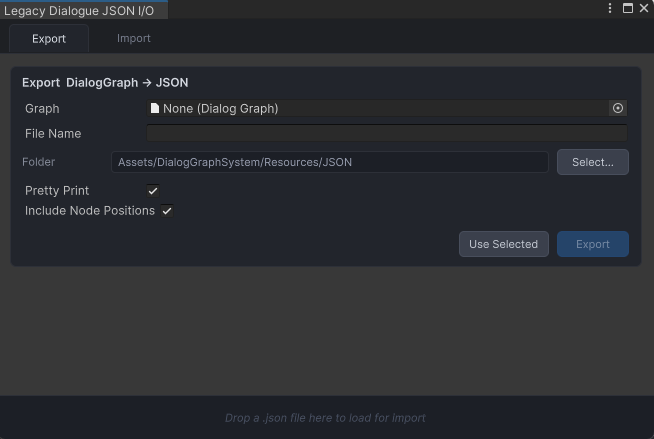
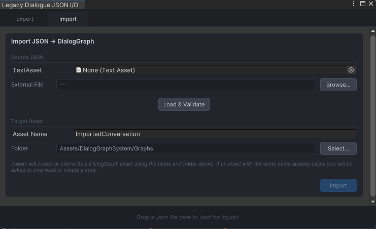

JSON Import and Export
The JSON tooling lets the system round-trip dialogue graphs to and from a serializable format for backups, review, migration, and controlled external tooling.
Key files
DialogJsonIOWindow.csDialogExportUtility.csDialogJsonImportBridge.cs
Editor entry point
Open Tools → Dialogue Graph System → JSON Import / Export.... The window has Export and Import tabs.
Export workflow
Choose a DialogGraph, choose an output folder inside Assets, enable pretty print if needed, and optionally include node positions.
Import workflow
Load JSON from a TextAsset or external file, validate it, create a new DialogGraph asset, and optionally open that graph in the editor window.
Import bridge
DialogJsonImportBridge parses JSON into DTOs, validates the structure, creates the graph asset, rebuilds nodes and links, and optionally opens the result in the graph editor. The shipped AI extension uses preview-first draft commands instead of raw full-graph JSON import.
Best practices
- export graphs before making large structural edits
- keep imported JSON under review if it comes from external tooling
- preserve the graph asset as the source of truth after import
JSON I/O window

Best image for this workflow.
Import window

The JSON import interface — load a JSON file to create or overwrite a graph asset.